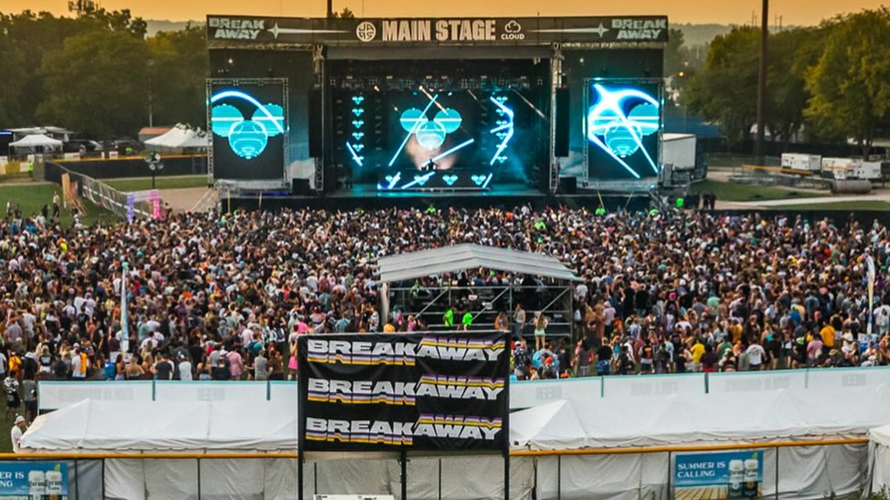

West Michigan
Walking Ghost Tours
- Grand Rapids, MI
- Year-round, 11 am or 7 pm
The Walking Ghost Tour offers a wonderful opportunity to see some of the older buildings in Downtown Grand Rapids while also hearing of the paranormal activity that occurs within them. If the paranormal isn't your thing, Tours Around Michigan offers a variety of other options, such as beer, wine, historic home, and church tours, all available year-round!
Click here to learn more and schedule a tour!
Tulip Time
- Holland, MI
- May 2-11, 2025
Named the fifth best flower festival in the United States by USA Today, Tulip Time is a decades-long tradition in celebration of the city's Dutch heritage. This week-long festival features a carnival and a packed line-up of events, including nightly dutch dance lessons and performances, two parades, and Fine Art and Quilt Exhibits.
Click here to see the full list of events!

Coast Guard Festival
- Grand Haven, MI
- July 25th-August 3rd
A long-standing tradition in Grand Haven, which was the first city to be given the designation Coast Guard City, USA, this celebration of the U.S. Coast Guard features a variety of activities and events! Opportunities inlcude attending the Cardboard Boat Race, Cruise-In Car Show, and the fireworks display, which is accompanied by a musical fountain and drones.
Click here to see the full list of events!

Breakaway Music Festival
- Belknap Park, Grand Rapids, MI
- August 15th & 16th
Breakaway is the largest touring festival in the United States, and this two-day festival features an impressive lineup of both celebrity and local musicians, including Zedd, Rezz, Gryffin, and Isoxo. Additionally, with a variety of ticket options, including travel packages, the event provides a full weekend of entertainment!
Click here to see the full list of events!

Central Michigan
Celebrating Life Powwow
- Central Michigan University, Mt. Pleasant, MI
- March 29th & 30th, 2025
This annual tradition at Central Michigan University provides an opportunity for the community to connect and experience Indigenous culture. The powwwow features dancing, singing, handmade crafts, a drumming contest, and more, as well as opportunities to learn more about the local Indigenous community.
Click here to learn more and purchase tickets!
Maple Syrup Festival
- Vermontville, MI
- April 25th-27th, 2025
The Vermontville Maple Syrup Festival was the first of its kind in Michigan, beginning in 1940, and has continued to bring the ommunity together each year! The festival kicks-off with a pancake dinner, and includes carnival rides, a flea market, two parades, and a variety of of informational events and concerts!
Click here to see the full schedule!
Southeast Michigan
Ford Rouge Factory Tour
- Dearborn, MI
- Various dates throughout 2025
The Ford Motor Company was founded on June 16th, 1903 in Detroit, MI, and the automobile industry has remained a staple in the city ever since. This five-part tour allows you to see not only the biggest moments from Ford's 122-year history but to also experience the current innovations that are being made in the automobile industry, right here in Michigan.
Click here to learn more and purchase tickets!

Movement EDM Festival
- Hart Plaza, Detroit, MI
- May 24-26, 2025
Movement is a three-day EDM festival and features a packed lineup of over 115 artists across 6 different stages! In addition to the music, the festival features a collection of immersive art and murals, and with 1-day or 3-day passes, Movement can be a fun weekend event or just one part of your time in Detroit!
Click here to see the full line-up and purchase tickets!